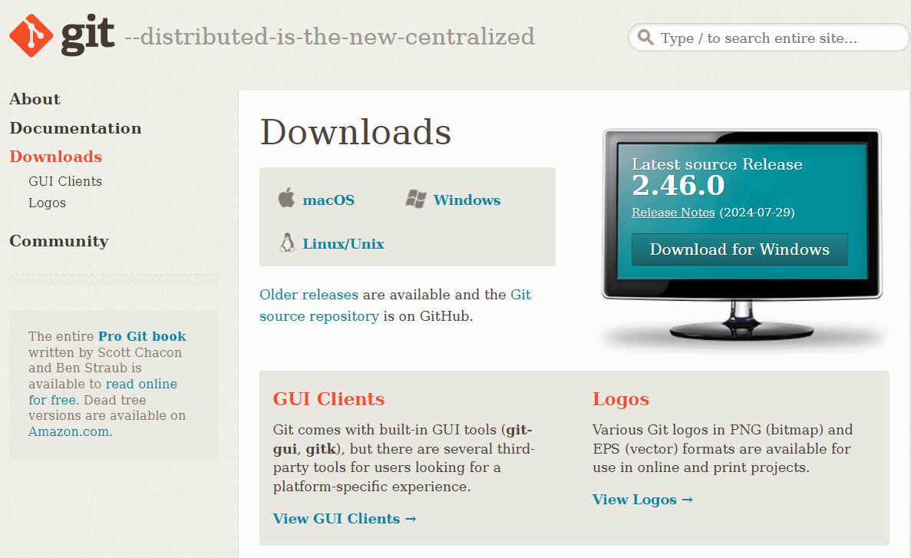

Lab 0: Team, project and GitHub account
Introduction
In this lab, you will learn how to create a GitHub account, join a team, and clone a repository. You will also learn how to install Git and configure it for the first time. Finally, you will learn the basics of Git and how to use it to track changes in your project.
This lab will be graded on 2/20.Team and project
The first step is to choose a team and a project. You can choose your team members and your project
based on your interests and skills. Each team will have a project to work on during the semester.
The project will be divided into tasks that will be assigned to each team member.
Teams must have at least 3 members and at most 4 members.
The project is a website that you will develop using HTML, CSS, JavaScript, and PHP. The website must have at least 5 web services. Web services are all the interactions between the front end and the back end regarding a specific item. These interactions can be grouped into four categories: Creation, Reading, Updating, and Deleting (CRUD). For example, in an E-commerce website, a service may concern product management. i.e. creating a new product, reading a list of products and displaying it to the user, updating its attributes (name, quantity, ...etc.), or deleting it from the database.
If you have not chosen a team and a project yet, you can do so by going to the web development
classroom.
A form will be available for you to fill in your team members and your project.
Only one team member has to fill out the form.
Create a GitHub account
GitHub is a code hosting platform for version control and collaboration. It lets you and others work
together on projects from anywhere.
You must create an account using your university email address. This account will be used to access
the repositories created by your teacher and to submit your work.
To create a GitHub account, you need to go to the official website: GitHub then click on the "Sign up" button and follow the
instructions.
If you already have an account with your personal email address, you can add your university email
address to your account by going to your account settings then clicking on the "Emails" tab and
adding your university email address.
If you already have chosen a team and a project, your teacher will create a repository for your project and add you to the team. You will receive an invitation email to join the team and access the repository. Make sure to accept the invitation to be able to access the repository.
Git and GitHub
What is Git?
Git is a distributed version control system that is used to track changes in source code during software development. It is designed to coordinate work among programmers, but it can be used to track changes in any set of files. Its goals include speed, data integrity, and support for distributed, non-linear workflows.
Install Git
Download Git from the official website: Git Downloads
Windows
After downloading the installer, run it and follow the installation steps. You can leave the default settings as they are.
Mac
There are several ways to install Git on macOS. The easiest is probably to install the Xcode Command Line Tools. On Mavericks (10.9) or above you can do this simply by trying to run git from the Terminal the very first time.
$ git --version
If you don't have it installed already, it will prompt you to install it.
If you want a more up to date version, you can also install it via a binary installer. A macOS Git
installer is maintained and available for download at the Git website, at https://git-scm.com/download/mac.

Linux
If you want to install the basic Git tools on Linux via a binary installer, you can generally do so through the package management tool that comes with your distribution. If you're on Fedora (or any closely-related RPM-based distribution, such as RHEL or CentOS), you can use dnf:
$ sudo dnf install git-all
If you're on a Debian-based distribution like Ubuntu, try apt:
$ sudo apt install git-all
First-time Git setup
After you install Git, you need to configure it only once on any computer. These configurations can be changed later on if needed by runing the same commands.
Your identity
The first thing you should do when you install Git is to set your user name and email address. This is important because every Git commit uses this information, and it's immutably baked into the commits you start creating:
$ git config --global user.name "Mahmoudi Mohamed Amine"
$ git config --global user.email mohamed.mahmoudi@ensia.edu.dz
Your default branch name
If you want to change the default branch name from "master" to "main", you can run the following command:
$ git config --global init.defaultBranch main
Your editor
Now that you have your identity set up, you can configure the default text editor that will be used when Git needs you to type in a message. If not configured, Git uses the system default editor.
$ git config --global core.editor "nano"
You can also use other text editors like vim, emacs, or any other text editor you prefer.
Checking your settings
You can check your settings by running the following command:
$ git config --list
Git Basics
Getting a Git repository
You can get a Git repository in two ways: by cloning an existing repository from elsewhere
or by creating a new repository from a local directory.
In our case, we will clone existing repositories from GitHub. Since the latters will be created by
your teacher, you will only need to clone them.
Clone an existing repository
To clone an existing repository, you need to go to the directory for your project in your local machine then run the clone command followed by the repository URL (i.e. git clone <url>):
$ cd /path/to/your/project
$ git clone https://github.com/the-repository-url
To get the repository URL, you need to go to the repository page on GitHub then click on the green "Code" button and copy the URL.
Create a new repository
To create a new repository, you need to go to the project directory in your local machine then run the following command:
$ cd /path/to/your/project
$ git init
Recording Changes to the Repository
Each file in your working directory can be in one of two states: tracked or untracked.
-
Tracked files:
These files are files that were in the last snapshot, as well as any newly staged files; they can be unmodified, modified, or staged. In short, tracked files are files that Git knows about.
-
Untracked files:
Untracked files are everything else — any files in your working directory that were not in your last snapshot and are not in your staging area. When you first clone a repository, all of your files will be tracked and unmodified because Git just checked them out and you haven't edited anything.
As you edit files, Git sees them as modified, because you've changed them since your last commit. As you work, you selectively stage these modified files and then commit all those staged changes, and the cycle repeats.
Checking the Status of Your Files
The main tool you use to determine which files are in which state is the git status command.
$ git status
Tracking New Files
In order to begin tracking a new file, you use the command git add. The git add command takes a path name for either a file or a directory; if it's a directory, the command adds all the files in that directory recursively. To add all files in the directory, you can use the dot (.) symbol.
$ git add filename
Committing Your Changes
After staging one or multiple files, you can commit them to the repository. To do so, you need to run the git commit command followed by the -m flag and the commit message. Remember that anything that is still unstaged — any files you have created or modified that you haven't run git add on since you edited them — won't go into this commit. They will stay as modified files on your disk.
$ git commit -m "Your commit message"
Removing Files
To remove a file from the repository, you need to run the git rm command followed by the file name. This command will remove the file from the repository and the working directory.
$ git rm filename